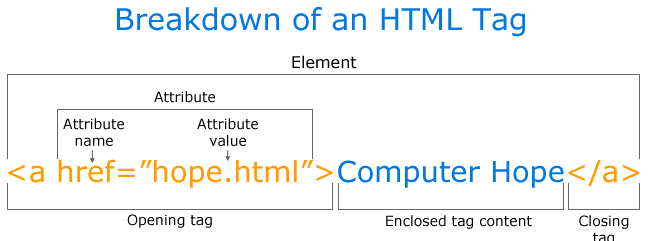

Тім Бернерс-Лі побачив можливість використання гіперпосилань для зв'язку будь-якої інформації з будь-якою
іншою інформацією через Інтернет. Тому гіперпосилання є невід'ємною частиною всесвітньої павутини.
Гіперпосилання - фрагмент HTML-документу та один із базових його елементів.
Гіперпосилання у HTML-документі може вказувати
як на файл, що лежить у тій самій директорії на сервері, так і вміщати повний шлях URL до файлу, який розташований в Інтернеті.
Також можна створювати гіперпо-
силання в середині одного документа, на електронну пошту, відео, аудіофайли та інші документи.
Гіперпосилання для користувача - текст або графічне зображення на сайті чи електронному документі, що дозволяє переходити до
інших об'єктів Інтернету.
Якщо обидва файли розташовуються в одній директорії, вистачить лише вказати ім'я файлу і розширення. Якщо в сусідніх
директоріях, слід вказати крім імені та розширення ще й шлях до директорії. Якщо файли розташовуються на різних директоріях,
потрібно вказати повну URL-адресу. Саме посилання в HTML створюється за допомогою тегу "a, /a", де атрибут href="URL" вказує
на URL файлу, name="Назва" створює розділ у документі із вказаною "Назва".